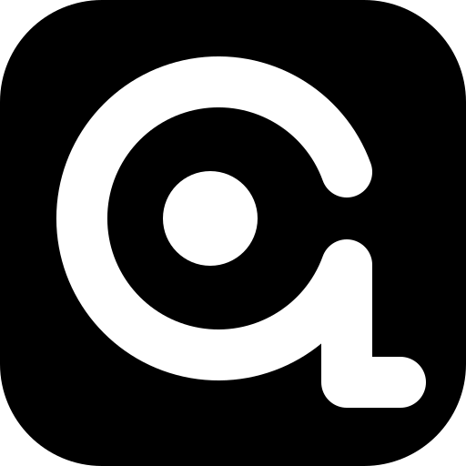

正在生成液态 Logo…独立包名的测试通道。新图标、MIUIX 排版和手机开服的最新改动会先在这里出现，正式版验证稳定后再跟进。
Android Debug 签名 · 仅 arm64 · 安装包约 225 MiB
Beta 不是正式版的替代品，而是提前验证新入口和新交互的独立测试包。
Beta 使用独立的自适应图标：黑色圆角底 + 白色几何 Q，内圆为实心。
底部悬浮 Dock、图标 + 文字、蓝色选中胶囊；主界面改为黑底蓝调，保持横屏。
服务器列表可直接启动、查看运行状态，并给服务端搜索下载插件或模组。
修复自适应图标在 Android Theme Engine 中被强转 BitmapDrawable 导致的启动崩溃。
com.qcl.launcher.ce.beta 可与正式版、官方版同时安装，游戏目录仍共用。
继续支持 FCL、Zalith Launcher 2、Zalith Launcher、HMCL-PE 的控键布局。
latestPrerelease），不会把正式版当更新推送。startup_trace.log。